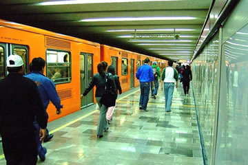
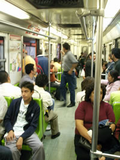

El estupendo metro de México
Los grandes sistemas de trenes metropolitanos son tan particulares como las ciudades donde se encuentran. El metro de la Ciudad de México también tiene sus características singulares. Es uno de los más modernos y avanzados del mundo desde el punto de vista tecnológico. El fuerte terremoto de 1985 apenas lo afectó. Por la tarde del día del desastre, la mayoría de las líneas funcionaban normalmente. Lo que parecía un milagro era, según los ingenieros, el resultado de un diseño que tuvo en cuenta la posibilidad de terremotos. Los trenes que estaban transitando durante el sismo continuaron funcionando con energía suministrada por baterías de emergencia hasta llegar a estaciones donde pudieron descargar a los pasajeros.
Unas estadísticas
La finalidad de este metro, como la de todos los demás del mundo, es ofrecer transporte rápido y económico a los residentes. Y es indiscutible que lo logra admirablemente. El metro hacía mucha falta en una ciudad que, según se calcula, tiene unos 20.000.000 de habitantes. Entre semana unos 4.000.000 de personas montan en él al día, casi el 20% de la población. Los trenes del metro se mueven a una velocidad promedio de 35 kilómetros por hora, contando las paradas en las estaciones, y pueden llegar a 88 kilómetros por hora.
Un mundo de vida y color
El metro es un mundo subterráneo, una ciudad debajo de otra. Los planificadores han construido un metro con más de 100 estaciones brillantes, alegres, y, en muchos casos, impresionantes. En ningún momento hay sensación de oscuridad ni de estar bajo tierra. Todo es vida y color. En las estaciones más concurridas a veces hay zonas comerciales. Entre la estación del Zócalo y la de Pino Suárez hay un túnel largo, muy iluminado donde uno puede comprar comida, ropa, libros y chucherías. Por allí también se ven individuos que entretienen a los pasajeros con suertes de prestidigitación y malabarismos.
Todas las estaciones estás decoradas con mucho gusto. La estación de Bellas Artes está adornada con reproducciones de murales mayas y tiene el piso de mármol, mientras la estación del Zócalo tiene vitrinas donde se reproduce la gran plaza en tiempos aztecas y coloniales.
Hasta la persona más cansada debe sentirse contenta al viajar por este mundo subterráneo tan ameno. Para el que visita la ciudad, el metro no es sólo un medio rápido y conveniente de trasladarse a cualquier parte de la capital, sino que también le brinda la oportunidad de conocer a los que viven en ella. Y como la tercera parte de las líneas no son subterráneas, el metro es una buena manera de ver la ciudad.